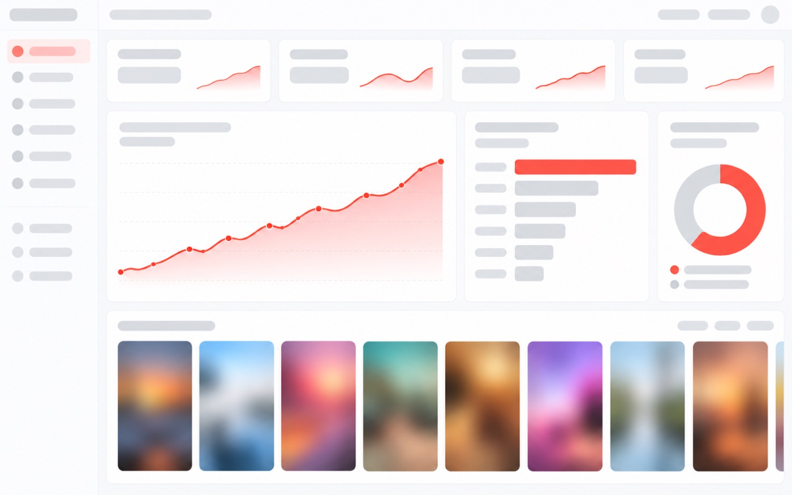

소재 때문에 광고비가 새고 있다면,
샘플부터 받아보세요.
월 고정비·약정 없이, 샘플을 보고 결정하세요.
바로 집행해도 성과가 나는 영상 소재를 가장 빠르게 보내드립니다.
- 2,640억고객사 매출(2025년 기준)
- 100만+고성과 학습 영상
- 180+함께한 브랜드
“소재는 계속 만드는데,
왜 성과는 제자리일까?”
- 01인하우스로 소재를 만드는데 시간이 너무 많이 든다
- 02외주로 맡겼는데 소재가 다 비슷하게 나온다
- 03잘 되던 소재가 금방 효율이 떨어진다
- 04시즌·프로모션을 앞두고 제작이 늦어진다
- 05어떤 소재가 나올지 모른 채 계약부터 해야 한다
소재는 감이 아니라
데이터로 만듭니다.
고성과 영상 100만+의 훅·첫 3초·자막·오퍼를 분석한 데이터로, 팔리는 이유가 있는 소재를 만듭니다.
감으로 만든 소재는 잘 되면 운이고, 안 되면 이유를 모릅니다.

샘플을 받고,
결과부터 먼저 확인해 보세요.
보기 좋은 소재보다 먼저,
팔릴 이유를 찾습니다.
대형 광고 플랫폼에서 성과가 검증된 영상 소재를 훅·첫 3초·장면 구성·자막·오퍼 등 요소별로 분석하고, 브랜드와 제품 카테고리별로 학습합니다. 그렇게 제작된 소재는 바로 광고를 집행해도 성과가 나올 수 있도록 만들어집니다.
고성과 소재를 분석합니다
대형 광고 플랫폼의 고성과 영상 소재를 요소별로 분석해, 브랜드와 카테고리별로 AI에 학습시킵니다.
가장 빠르게 만듭니다
상담 후 최대한 빠르게, 바로 집행해도 성과가 나올 수 있는 샘플을 전달합니다. 시즌과 프로모션을 놓치지 않는 속도입니다.
데이터로 늘려 갑니다
샘플과 초기 소재의 반응을 확인하고, 데이터를 기반으로 성과가 나는 방향의 소재를 늘려 갑니다.
함께 성과를 경험한
0+ 브랜드
건강, 뷰티, 리빙 등 다양한 카테고리에서 AD Lab의 소재로 광고를 집행하고 있습니다.
소재가 만든 성과,
숫자로 확인하세요
· 수치는 매체 집계 기준이며 집계 범위를 카드마다 표기합니다. · 일부 수치는 고객사와의 약속에 따라 공개 범위를 조정합니다.
대형 광고 플랫폼의
고성과 소재를 학습합니다.
유튜브·구글 광고에서 성과가 검증된 영상 소재를 훅·장면·자막·오퍼 등 요소별로 분석합니다.
Naver
네이버 광고에서 반응이 좋은 소재의 메시지와 구성을 요소별로 분석합니다.
Meta
인스타그램·페이스북의 고성과 영상 소재를 첫 3초와 전개 방식까지 요소별로 분석합니다.
Coupang
쿠팡 광고에서 구매로 이어진 소재의 구성과 오퍼를 요소별로 분석합니다.